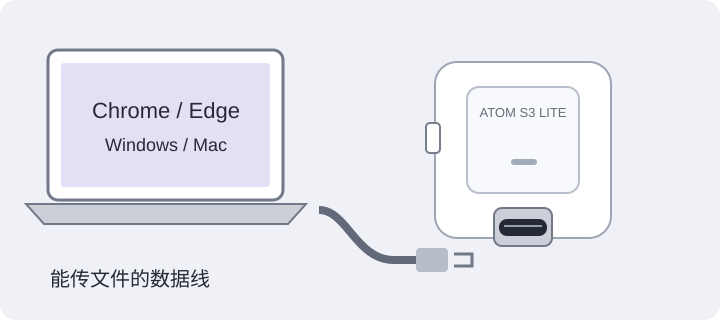
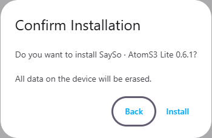
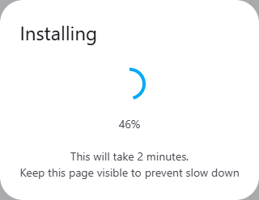
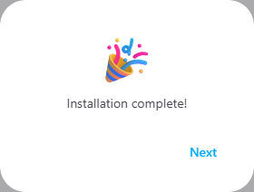
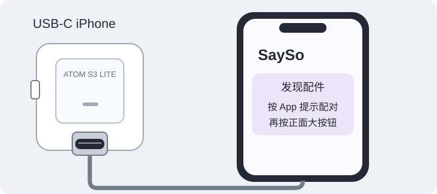

给配件安装 SaySo
SaySo 配件（M5Stack AtomS3 Lite），跟着三步装好。刷写通常需要 1–2 分钟。
第一次使用可以直接开始；如果以前装过，刷写会清空原来的配对。
图片看不清时，点图放大。
准备好电脑和数据线（先别插）
用 Windows 或 Mac 电脑上的 Chrome / Edge 打开本页。准备一根能传文件的数据线，只有充电功能的线不能刷写。配件暂时不要插到电脑或 iPhone。

认准白色方形 AtomS3 Lite，正面有大按钮，边上有小复位键。配件外观示意，非照片。 先接电脑，再长按侧边小复位键
- 用数据线把配件接到电脑，保持连接。
- 长按侧边小复位键约 2 秒，直到内部绿灯亮起，再松手。不是正面的大按钮。
- 松手后绿灯熄灭，表示已进入下载（刷写）模式。线继续插着，接着做第 3 步。

侧边小复位键负责进入下载模式；正面大按钮留到刷好后配对时再按。示意图按 M5Stack 官方结构绘制。 开始刷写，选配件，再确认安装
点下面的“开始刷写”，电脑才会弹出选择设备的窗口。选中刚接入的配件，再点“连接 / Connect”。
正在核对固件文件…

系统选择窗口示意，样式因系统而异。Windows 常见名称：USB JTAG/serial debug unit (COM…) 或 USB 串行设备 (COM…)；Mac 常见：USB JTAG/serial debug unit 或 usbmodem。端口号各不相同。 列表不会写“SaySo 配件”也没关系。找刚接入的这一项；没有设备时先取消，换能传数据的线或 USB 口，再重做第 2 步。

① 安装工具打开后，点 INSTALL（安装）；看到 Confirm Installation（确认安装），再点 INSTALL。 
② 等待 Installing（正在安装），通常 1–2 分钟。保持数据线连接，不要关闭网页。Preparing installation 超过 1 分钟时，换数据线或 USB 口后重试。 
③ 看到 Installation complete!（安装完成），点 NEXT（下一步）或关闭窗口，再拔下配件。 以上是同版安装工具的界面截图（演示状态，非本次实物刷写记录）。工具窗口为英文，对照下方中文操作即可。
刷好以后，回到 iPhone 配对
拔下来插到已解锁的 USB-C iPhone 上，打开 SaySo。
看到发现配件或配对提示后，按 App 提示开始；App 要求时，按一下配件正面的大按钮。等 SaySo 显示配对完成。

找不到配件，或一直在准备中？
换一根能传数据的线，或换一个 USB 口。
关闭其他串口工具，再按第 2 步操作。刷写失败时先不要插到 iPhone，重新连接电脑再安装。